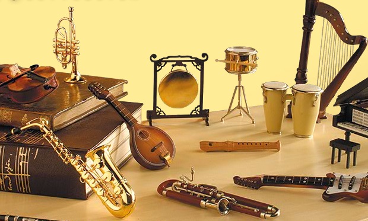

La musica:
La musica e' l'arte dell'organizzazione dei suoni e dei rumori nel corso del tempo e nello spazio.
Si tratta di arte in quanto complesso di norme pratiche adatte a conseguire
determinati effetti sonori, che riescono ad esprimere l'interiorita' dell'individuo che produce la musica e dell'ascoltatore; si tratta di scienza in quanto studio della nascita, dell'evoluzione e dell'analisi dell'intima struttura della musica.
Il generare suoni avviene mediante il canto o mediante strumenti musicali che, attraverso i principi dell'acustica, provocano la percezione uditiva e l'esperienza emotiva voluta dall'artista.
Il significato del termine musica non e' comunque univoco ed e' molto dibattuto tra gli studiosi per via delle diverse accezioni utilizzate nei vari periodi storici. Etimologicamente il termine musica deriva dall' aggettivo greco relativo alle Muse, figure della mitologia greca e romana, riferito in modo sottinteso a tecnica, anch' esso derivante dal greco techne. In origine il termine non indicava una particolare arte, bensi' tutte le arti delle Muse, e si riferiva a qualcosa di "perfetto". Le macrocategorie della colta, leggera ed etnica si articolano in diversi generi e forme musicali che utilizzano sistemi quali armonia, melodia, tonalita' e polifonia.

© 2017 sito web All Rights Reserved. Designed & Developed by Battani Gabriele